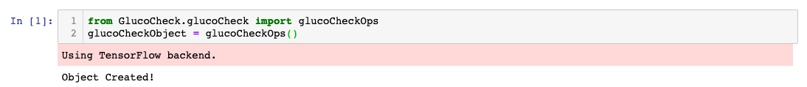

1. Package Description
Package name: GlucoCheck
Class name: glucoCheckOps
How to import the package?
- Download the zip file of the package here.
- Extract the zip file into your desired directory
- Create your own Python file. This could also be a Jupyter notebook. (Make sure it is in the same directory)
- Write the following line of code to import the package: from GlucoCheck.glucoCheck import glucoCheckOps
How to Create an object?
- Import the package
- Write the following line of code: glucoCheckObject = glucoCheckOps()
Example: Importing the package and creating an object of the class

Package dependencies:
The following packages are required to be installed when running 'GlucoCheck'. Links to the installation instructions are provided for each of the package
-
pandas:
pandas is a fast, powerful, flexible and easy to use open source data analysis and manipulation tool,built on top of the Python programming language. You can find the downloading and installation instructions here.
-
numpy:
Numpy is the fundamental package for scientific computing with Python. You can find the downloading and installation instructions here.
-
matplotlib:
Matplotlib is a comprehensive library for creating static, animated, and interactive visualizations in Python. You can find the downloading and installation instructions here.
-
seborn:
Seaborn is a Python data visualization library based on matplotlib. It provides a high-level interface for drawing attractive and informative statistical graphics. You can find the downloading and installation instructions here.
-
dateutil:
The dateutil module provides powerful extensions to the standard datetime module, available in Python. You can find the downloading and installation instructions here.
-
datetime:
The datetime module supplies classes for manipulating dates and times. While date and time arithmetic is supported, the focus of the implementation is on efficient attribute extraction for output formatting and manipulation. You can find the downloading and installation instructions here.
-
re:
This module provides regular expression matching operations similar to those found in Perl. You can find the downloading and installation instructions here.
-
sklearn:
Scikit-learn is a free software machine learning library for the Python programming language. It features various classification, regression and clustering algorithms including support vector machines, and more. You can find the downloading and installation instructions here.
-
keras:
Keras is an API designed for human beings, not machines. Keras follows best practices for reducing cognitive load: it offers consistent & simple APIs, it minimizes the number of user actions required for common use cases, and it provides clear & actionable error messages. You can find the downloading and installation instructions here.
-
scipy:
SciPy (pronounced “Sigh Pie”) is a Python-based ecosystem of open-source software for mathematics, science, and engineering. You can find the downloading and installation instructions here.
-
random:
This module implements pseudo-random number generators for various distributions. You can find the downloading and installation instructions here.
-
os:
This module provides a portable way of using operating system dependent functionality. You can find the downloading and installation instructions here.
-
math:
This module provides access to the mathematical functions defined by the C standard. You can find the downloading and installation instructions here.
-
statistics:
This module provides functions for calculating mathematical statistics of numeric (Real-valued) data. You can find the downloading and installation instructions here.
Installing Python
In case you don't have python installed, you can find the link with the instructions here.